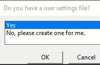
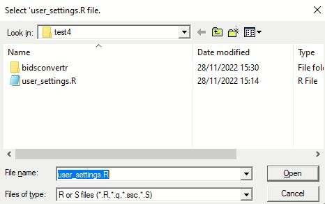

Starting the workflow
# Load the library.
# The 'quietly' argument turns off the messages about loading other dependencies.
library(bidsconvertr, quietly = TRUE)
# Start the workflow.
convert_to_BIDS()
The ‘user settings.R’ file - selection or creation
A ‘user settings.R’ file is required when using the ‘convert to BIDS()’ function. You are able to create a new file or select an already created one from a further conversion process.
Note
The ‘user settings.R’ file stores the settings and variables you’ve chosen (folders, filename convention, dcm2niix string, regular expressions). It is saved to the output directory and can be used again for future conversion processes. A user dialogue will walk you through the creation and selection process.
Do you have a user settings file?

Option |
What happens? |
|---|---|
Yes |
You are able to select your already existing file. It is located inside of a output directory. The user dialog is skipped. |
No |
Starts a selection process and creates your user settings file in the output folder. |
If you clicked “Yes”, you have to select an already existing “user_settings.R” file.
